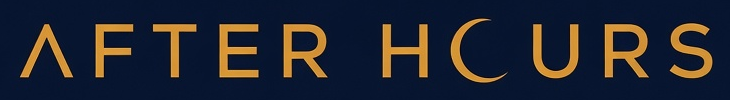

CZ/SK guilda pro WoW: Forever · Alliance · Normal ruleset
Od prvního dne levelujeme spolu, chodíme dungeony a pomáháme si s questy.
Postupně stavíme raid tým, který chce progressovat, ale jen 1–2 večery týdně.
Dospělá komunita bez toxicity a bez tlaku na každodenní hraní. Navrátilci i nováčci vítáni.